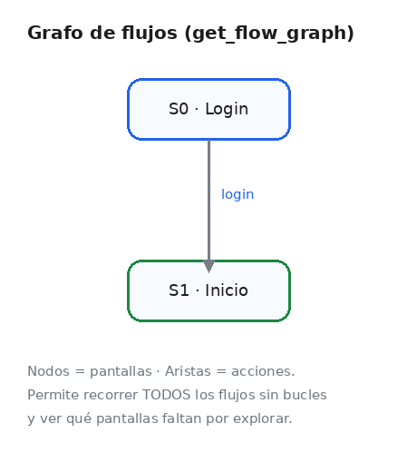
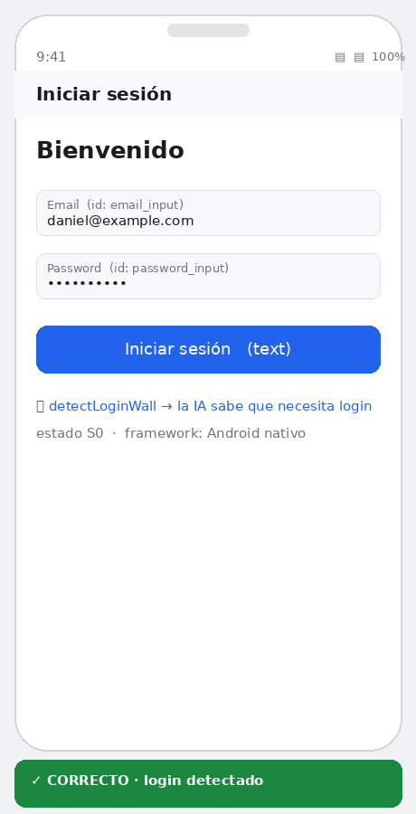
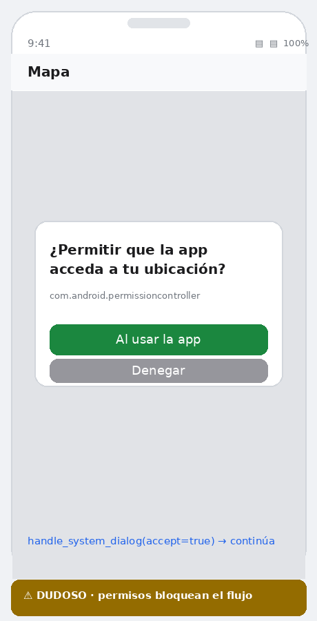
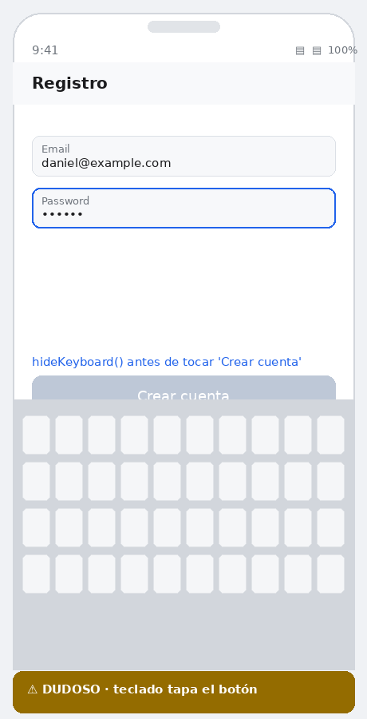
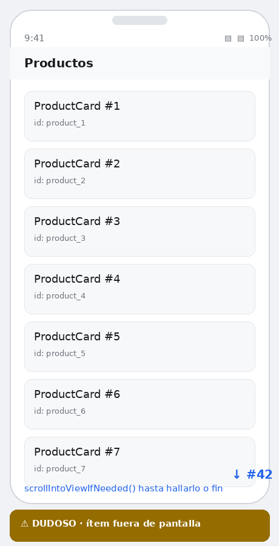
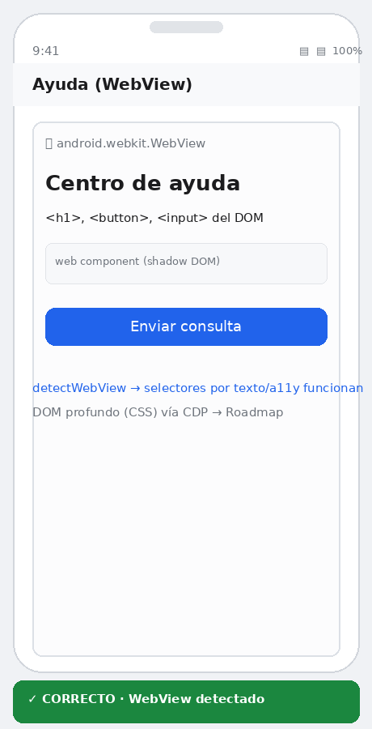
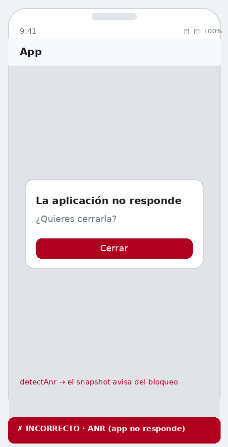
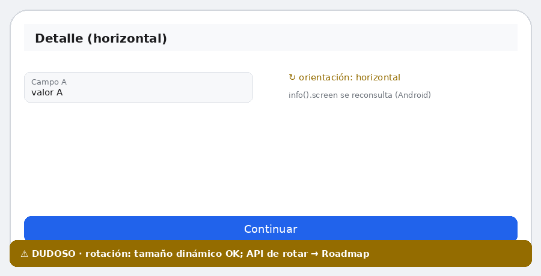
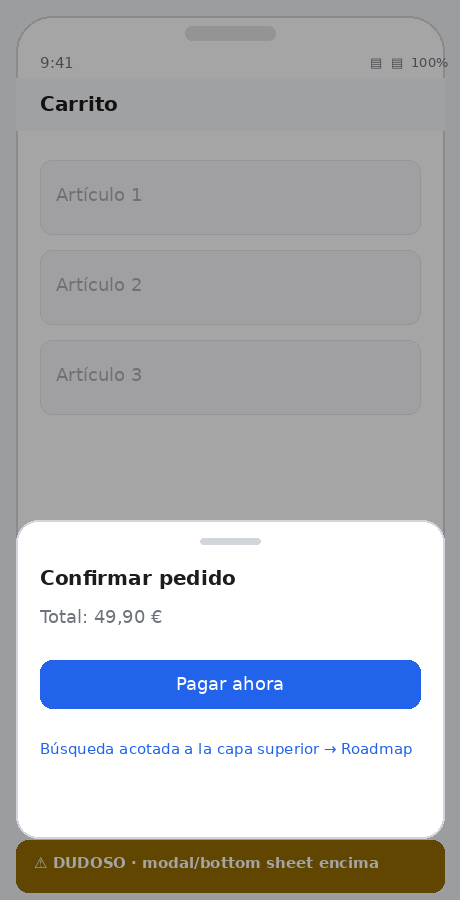

En simple, ¿qué es esto?
Sin tecnicismos.
Un “probador” incansable
Mobiwright abre tu app en un teléfono virtual y la usa solo: toca botones, rellena formularios y comprueba que cada pantalla aparece como debe.
Con ayuda de IA
Puedes pedirle a una inteligencia artificial que “explore” tu app entera y te diga, en lenguaje normal, qué funciona y qué no — sin que tú escribas nada.
Te deja pruebas
Genera un informe con capturas, un vídeo del recorrido y un mapa de las pantallas, para que cualquiera vea qué se revisó.
¿Eres del equipo técnico? Baja un poco para ver el código y la API ↓
Por qué Mobiwright
Todo lo que hace robusto a Playwright, llevado al móvil nativo.
Auto-waiting
Cada tap, fill y expect reintenta hasta que el elemento es accionable. Adiós a los sleep() y a los tests flaky.
Un test, dos plataformas
El mismo spec corre en Android e iOS. La API no conoce la plataforma; los drivers hablan con adb, simctl e idb.
Locators semánticos
getByRole, getByTestId, getByText y encadenamiento (listitem → button).
Servidor MCP
Cualquier IA (Claude, GPT, Gemini…) se conecta, ve el árbol de accesibilidad y recorre todos los flujos.
Trace + vídeo
Recorrido paso a paso con capturas y grabación .mp4 del flujo, igual que el trace viewer de Playwright.
Paralelo y sin servidor
Varios dispositivos a la vez (workers), sin Appium ni binarios intermedios.
Si usaste Playwright,
ya sabes Mobiwright
Misma ergonomía: locators perezosos, aserciones con reintento y un runner con
describe, hooks, reintentos y reportes list/html/json/junit.
Selecciona por rol semántico y encadena para acotar la búsqueda dentro de un contenedor.
import { test, expect } from "mobiwright"; test("login con credenciales válidas", async ({ device }) => { await device.getByTestId("email_input").fill("daniel@example.com"); await device.getByTestId("password_input").fill("Sup3rSecret!"); await device.getByRole("button", { name: "Iniciar sesión" }).tap(); await expect(device.getByTestId("home_title")).toBeVisible(); });
Cómo funciona
De cero a tu primer test en tres pasos.
Instala y configura
npm i mobiwright y mplay init crea el config y un test de ejemplo.
Escribe tus tests
Selectores estables con getByTestId / getByRole; el mismo spec vale para Android e iOS.
Ejecuta y revisa
npx mplay test — informe HTML, trace paso a paso y vídeo del flujo.
# instala y diagnostica el entorno $ npm install mobiwright $ npx mplay doctor # crea config + test de ejemplo $ npx mplay init # ejecuta (todos los proyectos / en paralelo) $ npx mplay test $ npx mplay test --platform=android --workers=2 # que una IA conduzca el flujo (MCP) $ npx mplay mcp
Locators expresivos
Mapean a los tipos nativos de cada plataforma.
| Método | Android / iOS |
|---|---|
| getByTestId("login") | resource-id (RN testID) / accessibilityIdentifier |
| getByRole("button", { name }) | mapea rol → tipos nativos (button, textfield, text…) |
| getByText(/bienvenid/i) | texto visible (string o RegExp) |
| getByAccessibility("Cerrar") | content-desc / accessibilityLabel |
| listitem.first().getByRole("button") | encadenamiento por contención de bounds |
Que una IA recorra y revise tu app
El servidor MCP de Mobiwright expone el emulador a cualquier modelo (Claude, GPT, Gemini, modelos locales…). La IA recibe el árbol de accesibilidad —no píxeles—, decide el siguiente paso y construye un grafo de flujos para recorrer todas las pantallas sin perderse.
Detecta automáticamente pantallas de login, permisos, ANR, WebView y el framework (nativo, React Native, Flutter…).
Leer la guía MCP ↗
Situaciones del flujo que entiende
Mobiwright detecta y maneja los casos que rompen los tests móviles.








Reporte completo con los 11 casos e instrucciones para replicarlos en FLOW_REPORT.md ↗
Empieza en un minuto
Clona el repo, compila y prueba el flujo de demo sin necesidad de un emulador.
$ git clone https://github.com/dan085/Mobiwright.git $ cd Mobiwright && npm install && npm run build # prueba sin dispositivo (driver de demostración) $ npm run verify # casos borde $ npm run test:demo # flujo de login completo